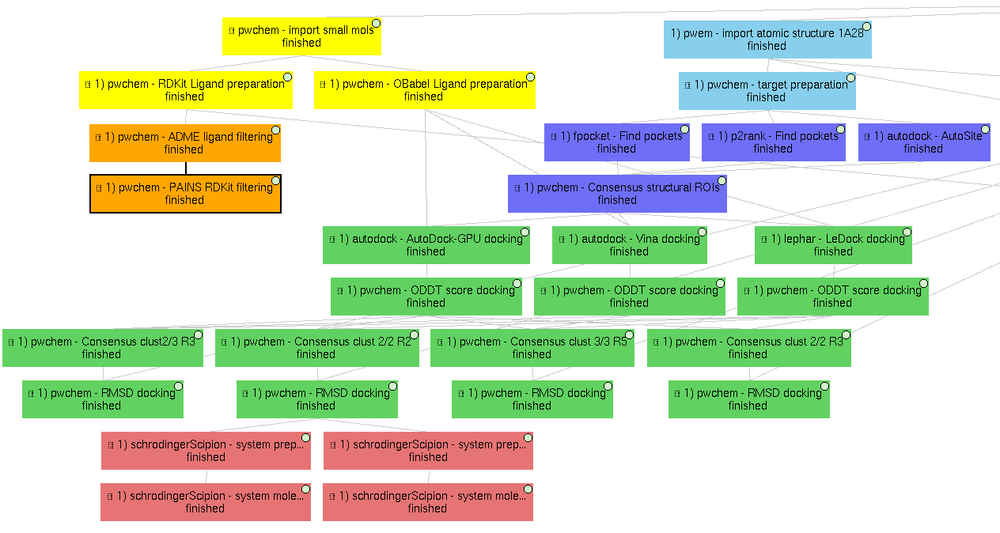

Supplementary workflow (1a28_workflow)
This section contains a VDS supplementary for the VDS Scipion-chem publication for D-COID database for 1A28 PDB entry, with a few variations from the 4ERF example. The same pattern ( <Subworkflow number> ) <Plugin> - <Task performed> ) is used to describe identify the subworkflow each of the protocols belongs to. In this case, the subworkflows are:
1) Main VDS workflow
Principal workflow that includes protocols following the “VDS workflow” section:
- Molecules import
Receptor import: 1A28 structure from D-COID database, corresponding to 1A28 PDB entry, the progesterone receptor linked to its ligand progesterone. The ligand is removed from the original structure in order to get the receptor structure.
Small molecules import: the 4 small molecule provided in the D-COID database (DOI: 10.17632/8czn4rxz68.1) are imported from local files. These include the active molecule (progesterone) and 3 decoys which have been proved not to interact with the receptor.
- Molecules preparation
Receptor preparation: we used Scipion-chem protocol (using biopython) to prepare the receptor, removing water and other heteroatoms.
Small molecules preparation: we used OpenBabel ligand preparation in order to add charges to the imported small molecules and generating up to 5 conformers for each of them.
- Molecules filtering
Ligand filtering: RDKit ADME and PAINS filter protocols are executed over the input molecules (previously prepared with RDKit). The 4 of them pass the filters.
Regions Of Interest definition: set of protocols that tries to find the most promising regions of the receptor for interacting with the ligand. We did so by, first, independently predicting these receptor pockets with FPocket, P2Rank and AutoSite. Then, the results of each software are combined using the consensus protocol as explained in the paper. These resulting ROIs contain both the actual pocket of the progesterone and the same pocket in the dimer, which is not occupied in the actual structure, as shown in the figure in the paper related to this section.
Docking
Prepared small molecules are docked onto the consensus ROIs. This task is performed independently using LeDock, AutoDock-GPU and Vina, with default parameters. Then, as explained in the paper, the results of these protocols are rescored using ODDT Vina, RFScore_v3 and NNScore. Finally, the rescored docking poses are combined and the most promising ones are extracted using the consensus protocol, with the different parameters explained in the paper. The name of the protocol specifies the parameters as: asking the clusters to contain x out of y input source poses (clut x/y) and with intra-cluster maximum RMSD of z (Rz). An additional protocol is added in this workflow to measure the RMSD distance of each of the docking poses to the actual ligand position.
Molecular dynamics
The best 2 scored docking pose from the consensus docking protocol (which are the actual ligand, progesterone, according to all the tried scores) are used as input for the Molecular dynamics simulation example. Each of them come from a different pocket, but have similar scores, are stated in the paper. To do so, we used Desmond, from Schrödinger. We used this commercial software because of the advanced trajectory analysis and the automatic ligand parametrization they provide.
System preparation: the docked molecule (together with the receptor) is surrounded by a water box (with 5A buffer) with the SPC water model. Na+ and Cl- are added to reach 0.15M concentration and neutralizing the system. S-OPLS main force field is used to parametrize the system.
Simulation: the prepared system is simulated in this protocol using Desmond. First, the system is minimized and equilibrated following the default Desmond procedure. Then, a small production simulation is executed, enlarging the trajectory with 24ps of unrestricted simulations.
2) Structural ROIs definition
This Scipion project also includes one example on how to determine structural ROIs based on mutations or variants of the original receptor sequence and known binding residues.
3) Pharmacophore-based workflow
This project includes the pharmacophore-based screening described in the paper.
To do so, the actual ligand of 1A28 is first extracted and a pharmacophore is generated from it. This pharmacophore is used as a filter for out set of 4 small molecules. In this example, as the pharmacophore features are built using RDKit, we prepared the small molecules using RDKit too. The only small molecule fitted into the pharmacophore is the actual ligand, the progesterone, shown in the figure of the paper related to this section.

4) Molecular dynamics (MD)
Finally, this project also includes several examples of molecular dynamics simulations.
On a docked molecule
As described in the “Main VDS workflow” section, two molecular dynamics simulation are performed using Desmond over the most promising docked molecules.
Only on the receptor
Finally, a MD simulation is performed on the receptor only, this time using Gromacs. As for the previous cases, a first protocol is used to define the system, with the water box, ions and force fields; and a second protocol actually executes the simulation, which can be visualized using PyMol or VMD (recommended). Moreover, several Gromacs trajectory analysis can be executed from the Scipion GUI in the Analyze results option. However, the simulation is not executed in the project, since the resulting trajectory is composed by large files that could not be uploaded on GitHub, but the user is free to execute it locally.